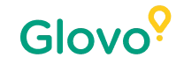

.webp)
Diseña experiencias y productos digitales con criterio UX/UI y toma decisiones estratégicas apoyadas en IA, aprendiendo de profesionales en activo y construyendo un portfolio real.
Déjanos tus datos y un asesor te contará precio, becas y próximas fechas.
Formación alineada con herramientas líderes del ecosistema digital como Figma o Condens.

.webp)
Un programa práctico desde el primer día, con la IA integrada en todo el proceso y orientado a que salgas con portfolio y con criterio de mercado.
Un Core Project transversal y 6 UXUI Design Labs 100% hands-on donde resuelves retos reales. Al terminar tienes 7 piezas concretas para mostrar en entrevistas, no solo un proyecto.
Diseñas en equipo un producto digital completo (app o web): investigas un problema real, generas insights, diseñas experiencia e interfaz, construyes un prototipo navegable de alta fidelidad, lo testeas con usuarios y lo defiendes en la Demo Day.
Contenido específico sobre cómo trabajar en equipos de producto reales: gestión del día a día, comunicación con desarrollo y toma de decisiones con stakeholders.
Licencias de Figma (con Figma Make, su extensión de IA nativa) y Condens AI incluidas en el programa para investigar, diseñar y prototipar.
La inteligencia artificial no es un añadido al final del programa: está presente en cada fase del proceso de diseño, desde el research y la ideación hasta el prototipado, el testing y el handoff con desarrollo.
El claustro son diseñadores en activo en empresas como BBVA, SCRM Lidl, Adevinta, DELL u Oxford Heartbeat, que enseñan los procesos reales que aplican en su trabajo.
El mercado ya pide perfiles híbridos que combinen UX/UI + IA + producto + estrategia. Diseñar pantallas ya no es suficiente, y este máster te forma justo en esa intersección.
Muchos entran al sector sin experiencia ni portfolio, y el perfil junior tiene mucha competencia. Sales con un Core Project y 6 UXUI Labs: 7 piezas concretas para mostrar en entrevistas.
Aprendes el ciclo real de diseño en empresa: cómo priorizar, hablar con desarrollo, documentar el handoff y entender las limitaciones técnicas.
El Máster en UX/UI & AI Design de Nuclio está pensado para profesionales del diseño y del producto que quieren integrar la inteligencia artificial en la creación de experiencias digitales reales.
La IA no es un añadido al final: está presente en cada fase del proceso, desde el research y la ideación hasta el prototipado, el testing y el handoff con desarrollo. Y todo sin necesidad de programar.

8 módulos y un pre-work introductorio de Figma (M0), con 6 UXUI Design Labs 100% hands-on repartidos a lo largo del programa. Cada lab genera una pieza real para tu portfolio.
Licencias de Figma (con Figma Make, su extensión de IA nativa) y Condens AI incluidas en el programa para investigar, diseñar y prototipar.
El máster está dirigido por dos directoras y un equipo docente de profesionales en activo, con experiencia real en investigación, diseño de experiencias de usuario y testeo de producto, en empresas como BBVA, SCRM Lidl, Adevinta, DELL u Oxford Heartbeat.

Profesional de Design Research y Experiencia de Usuario con más de 10 años impulsando la innovación digital en entornos corporativos y educativos.

Diseñadora de producto UX/UI especializada en diseño visual y producto digital, con más de 6 años de experiencia en startups, consultoría y gran empresa.


Este máster está diseñado para profesionales que quieren consolidarse en diseño y producto digital, liderar proyectos de creación de experiencias impulsadas por IA o evolucionar su perfil dentro de equipos de producto.
Acompañamiento integral para maximizar tu empleabilidad: orientación profesional, construcción de CV, portfolio y LinkedIn, estrategias de búsqueda de empleo, bolsa exclusiva y conexión con el ecosistema empresarial.
Evento anual de empleabilidad donde conectas directamente con empresas y puedes hacer entrevistas el mismo día mediante speed dating, con partners como Desigual, Amphora, VML, CaixaBank, NTT Data, Jellyfish, Apiux, InPost o Garaje de Ideas.
Déjanos tus datos y un asesor se pondrá en contacto contigo para resolver tus dudas y acompañarte durante todo el proceso. Sin compromiso.
Plazas limitadas para la edición de Octubre 2026.